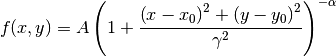

Bases: astropy.modeling.core.Parametric2DModel
Two dimensional Beta model.
| Parameters: | amplitude : float
x_0 : float
y_0 : float
gamma : float
alpha : float
|
|---|
See also
Notes
Model formula:

Attributes Summary
| alpha | |
| amplitude | |
| gamma | |
| param_names | list() -> new empty list |
| x_0 | |
| y_0 |
Methods Summary
| deriv(x, y, amplitude, x_0, y_0, gamma, alpha) | Two dimensional Beta model derivative |
| eval(x, y, amplitude, x_0, y_0, gamma, alpha) | Two dimensional Beta model function |
Attributes Documentation
Methods Documentation
Two dimensional Beta model derivative
Two dimensional Beta model function